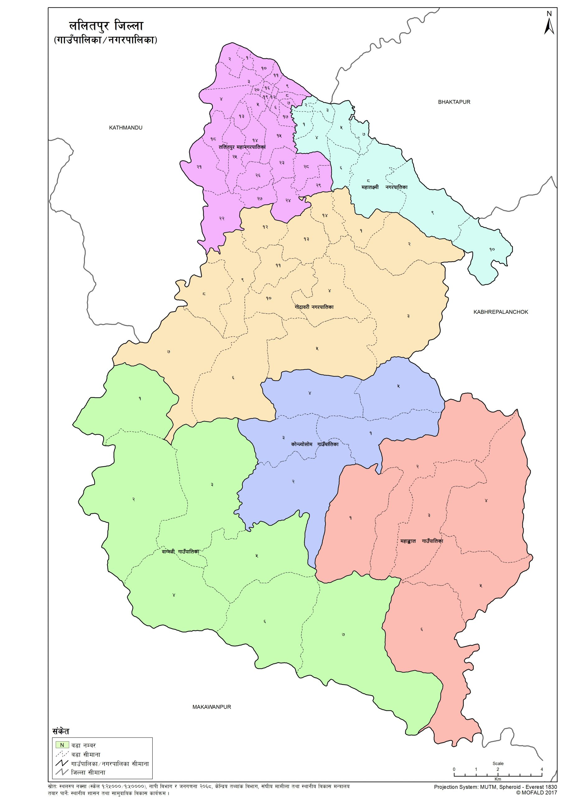
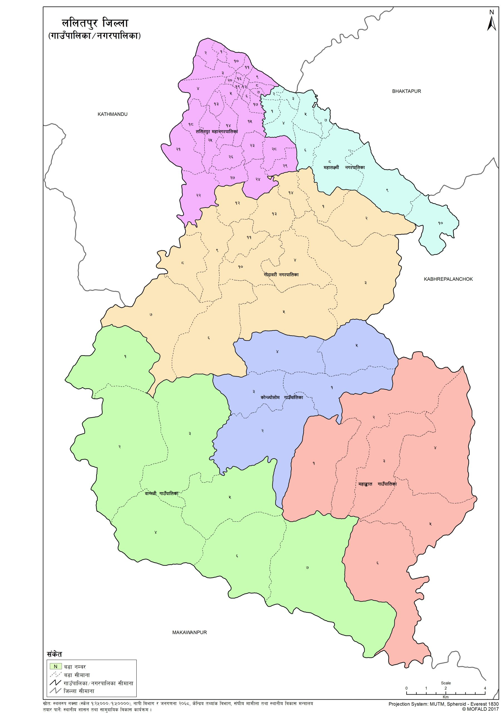
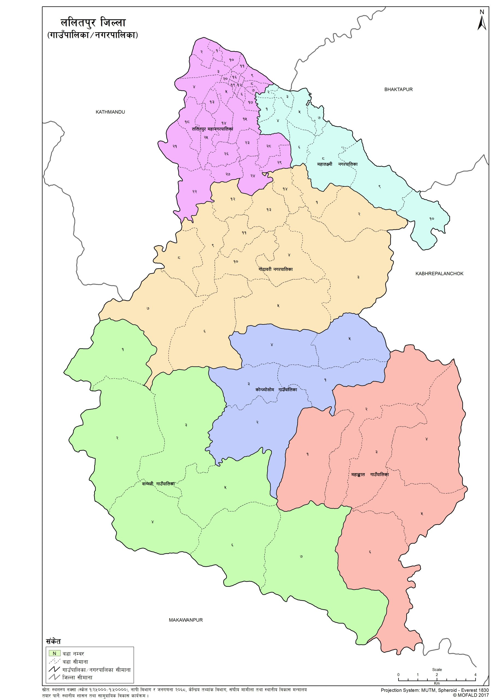

Lalitpur is also known as Manigal. It is best known for its rich cultural heritage, particularly its tradition of arts and crafts.
It has a multi-ethnic population with a Hindu and Buddhist majority. Religious and cultural festivities form a major part of the lives of people
residing in Kathmandu. Tourism is an important part of the city's economy and it is renowned for its festivals and feasts, ancient art, and the
making of metallic, wood and stone statues. Lalitpur is also home to Patan Durbar Square, which has been listed by UNESCO as a World Heritage Site.

One of the most used and typical Newar names of Lalitpur is Yala. It is said that King Yalamber or Yellung Hang named this city after himself,
and ever since this ancient city was known as Yala. There are many legends about its name. The most popular one is the legend of the god Rato
Machhindranath (also known as Bunga Dyah), who was brought to the valley from Kamaru Kamachhya, located in Assam, India, by a group of three
people representing the three kingdoms centered in the Kathmandu Valley. One of them was called Lalit, a farmer who carried god Rato
Machhindranath to the valley all the way from Assam, India. The purpose of bringing the god Rato Machhindranath to the valley was to overcome
the worst drought there. There was a strong belief that the god Rato Machhindranath would bring rain in the valley. It was due to Lalit's effort
that the god Rato Machhindranath was settled in Lalitpur. Many believe that the name of the town is kept after his name Lalit and pur meaning township.

 
